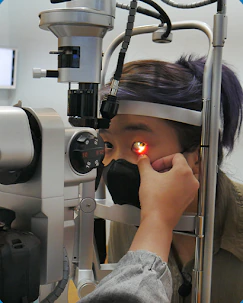
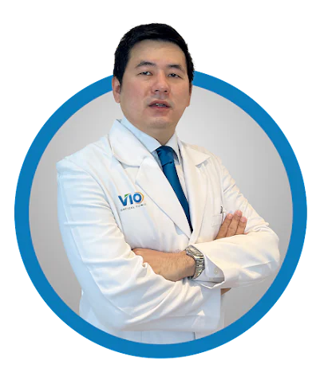

Kairissta
Bunda Aim, Influencer
"Bebas menggapai cita-cita, Aim sekarang bebas mata minus dari minus 3,75 berkat terapi ortho-K di VIO Optical Clinic."

Udah coba berbagai cara tapi belum berhasil?
Terapi Mata Minus, Ortho-K solusinya!
Konsultasi SekarangTerapi Ortho-K adalah terapi mata minus dengan lensa kontak yang dipakai saat tidur untuk membentuk ulang kornea mata tanpa harus mengikis kornea mata dengan operasi.

Bunda Aim, Influencer
"Bebas menggapai cita-cita, Aim sekarang bebas mata minus dari minus 3,75 berkat terapi ortho-K di VIO Optical Clinic."

Content Creator
"Capek berkacamata terus, akhirnya ikut Terapi ortho-K dari minus 2,25 sekarang jadi normal, thanks VIO!"

Atlet Basket Prawira Bandung
"Sejak pakai ortho-K sekarang main basket lebih enjoy karna ga perlu pakai softlens lagi."

Pelajar
"Setelah berbagai cara dilakukan, akhirnya aku pakai terapi ortho-K. Hanya seminggu pakai, mata minus aku dari 11 turun hingga 5."


Dokter Optometri lulusan Cebu Doctor University Phillipine berpengalaman yang tersertifikasi dari Fellow American Academy of Optometry (FAAO) dengan spesialisasi di bidang Vision Therapy dan sudah diakui skala Internasional. Selain itu, beliau juga berkolaborasi dengan dokter spesialis mata.
Sertifikat Pencapaian